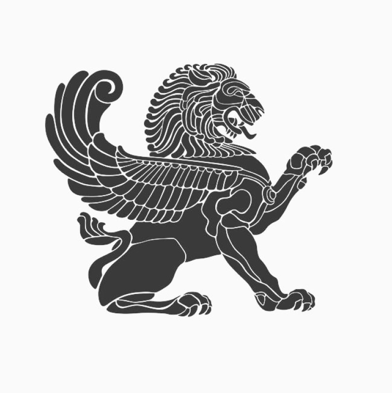

Животные-символы в древнегреческой мифологии: священные посредники между мирами
В мировоззрении древних греков животные никогда не были просто биологическими видами — они представляли собой живые символы, наделённые глубоким сакральным смыслом. Каждое значимое животное в пантеоне выполняло тройную функцию: служило атрибутом божества, воплощало природные силы и являлось психопомпом — проводником между мирами. Эти зооморфные образы пронизывали все уровни греческой культуры от высокого искусства до деревенских суеверий.
В мировоззрении древних греков животные никогда не были просто биологическими видами — они представляли собой живые символы, наделённые глубоким сакральным смыслом. Каждое значимое животное в пантеоне выполняло тройную функцию: служило атрибутом божества, воплощало природные силы и являлось психопомпом — проводником между мирами. Эти зооморфные образы пронизывали все уровни греческой культуры от высокого искусства до деревенских суеверий.
Крылатые вестники олимпийцев.
На вершине символической иерархии находились птицы, чья способность парить между небом и землёй делала их идеальными посланниками богов. Орел Зевса, с молнией в когтях, не просто сопровождал громовержца — он был зримым воплощением его всевидящей власти. В Додоне жрецы толковали полёт орлов как знамения. Сова Афины (глубоководная рыбная сова, точнее) с её немигающим взором символизировала мудрость, проявляющуюся в темноте неведения. Любопытно, что на афинских монетах сова изображалась с полумесяцем — напоминание о ночной природе истинного знания.
Морские птицы также играли важную роль. Альциона (зимородок), в которую превратилась обезумевшая от горя Алкиона, стала символом "алкиониных дней" — зимнего затишья в море. Лебедь, связанный с Аполлоном, олицетворял преображение — не случайно Зевс явился Леде в этом облике. Даже ворон, первоначально серебристо-белый спутник Аполлона, после неудачного известия стал чёрным вестником несчастий.
Земные властители: от быков до змей.
Среди четвероногих особое место занимал бык — самый противоречивый символ греческого мира. С одной стороны, это воплощение плодородия (критский бык Посейдона), с другой — разрушительной ярости (бык, насланный на Геракла). Минойская культура обожествляла быка в таврокатапсиях — ритуальных прыжках через рогатого зверя. Лошадь, священное животное Посейдона Гиппия ("Конного"), олицетворяла неукротимую морскую стихию — не случайно кони появлялись из пены волн.
Змеи занимали особое положение как хтонические существа. Пифон Дельфийский охранял древнее святилище Геи до прихода Аполлона. Эрихтоний, афинский царь-полузверь, напоминал о автохтонном происхождении народа. Даже Афина Парфенос держала в руках священную змею Акрополя — воплощение мудрости и защиты. В Эпидавре змеи Асклепия участвовали в исцеляющих ритуалах, а их сброшенная кожа символизировала обновление.
Морские и гибридные существа.
Водная стихия порождала свои символы. Дельфин, спасающий тонущих и сопровождающий Аполлона Дельфиния, стал символом светлого начала. Аристей наблюдал, как дельфины выносят на берег утопленников — отсюда их связь с загробным миром. Осьминог на минойских фресках олицетворял пучину, его изображения наносили на щиты как защиту.
Гибридные существа несли особую смысловую нагрузку. Кентавры (за исключением Хирона) воплощали необузданную природу, их битва с лапифами стала аллегорией борьбы цивилизации с варварством. Сфинкс с телом льва и головой женщины охраняла вход в Фивы как страж тайного знания. Даже Пегас, рождённый из крови Медузы, не был просто транспортным средством — его удар копыта открывал источник поэтического вдохновения.
Символизм в ритуалах и поверьях
Животные активно участвовали в религиозной практике. При жертвоприношениях учитывалась символика:
• Белые бараны — Зевсу
• Чёрные овцы — подземным богам
• Свиньи — Деметре
• Петухи — Асклепию
В повседневной жизни змея в доме считалась добрым духом-покровителем. Увидеть сову перед битвой — к победе (как при Марафоне). Дельфины, приведшие корабль в гавань — знак благосклонности Посейдона.
Эволюция образов в эллинистическую эпоху.
• С походов Александра экзотические животные обрели новую символику:
• Слон стал атрибутом царской власти
• Попугай ассоциировался с экзотикой Востока
Жираф (камелопард) считался гибридом верблюда и леопарда
Даже в христианскую эпоху эти образы не исчезли — византийские церкви украшали мозаики с павлинами (символ бессмертия) и рыбами (тайный знак Христа).